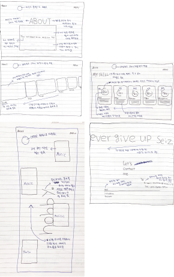
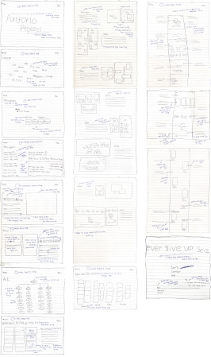

Portfolio
Process
Portfolio
Process
Point Color
#FF5A00
Background Color
#FFFFFF
#000000
#202020
Lexend Light 18px
Lexend Light 20px
Lexend Light 25px
Lexend Light 26px
Lexend Regula 17px
Lexend Regula 22px
Lexend Medium 16px
Lexend Medium 18px
Lexend Medium 25px
Lexend SemiBold 15px
Lexend SemiBold 21px
Lexend Bold 20px
Lexend Bold 22px
Lexend Bold 33px
Lexend ExtraBold 21px
Lexend ExtraBold 40px
Lexend ExtraBold 55px
Noto Sans KR Regular 18px
Noto Sans KR Bold 18px
Playfair Display Medium 70px
Trirong Italic 120px
Trirong Italic 150px
Trirong Italic Medium 265px
Playfair Display SC Regular 277px
Lexend Medium 210px
Lexend Medium 280px
Lexend SemiBold 428px
Lexend ExtraBold 61px
Lexend ExtraBold 70px
Lexend ExtraBold 123px
Lexend ExtraBold 189px
BRAINSTOMING
1단계는 포트폴리오에 들어갈 키워드를 생각해 보았습니다.
2단계는 나의 성격, 취미, 디자인등 나에대한 것을 키워드로 적어보았고 그 안에서
각 키워드에 해당되는 단어들을 생각하여 적어보았습니다.
3단계는 각 키워드 단어들중에서 중복되는 단어들을 합쳐 또 한번 키워드를 도출
해 내었습니다.
4단계는 도출해내 키워드 토대로 포트폴리오 디자인을 도출하였고, 어피니티 다이
어그램키워드도 도출해 내었습니다.

AFFINITY DIAGRAM
1단계는 브레인 스토밍에서 도출한 키워드 단어들을 토대로 생각나는 단어
들을 적었습니다.
2단계는 키워드 토대로 적은 단어들중에서 중복되는 단어들을 모으고 도출
해낸 키워드로는 성격,취미,스킬,디자인을 도출 했습니다.
3단계는 성격,취미,스킬,디자인에서 더 세분화해서 도출 하였습니다.
디자인에서 세분화 한 것은 심플,깔끔함,디자인,모던,포인트 컬러,트렌디,
여백을 세분화해서 도출 하였습니다.
A.I
Main Reference
- Index, About, Work에 메인 레퍼런스로 참고 하였음.
-스크롤 트리거를 이용한 트리거를 해당하는 섹션별로 구현 하였음.
-트리거 중에서 스크롤 할 시 안 보이던 동그라미가 보이는 트리거를 사용 하였음.
-index 메인섹션에서 스크롤 할시 HELLO!글자위로 이미지가 커지고 아래 글자들이
올라오는 효과를 주었음.
-디자인은 동일하게 갔지만 안에 내용은 나의 대한 내용으로 상세하게 적었음.
-디자인은 블랙 & 화이트로 동일하게 하였고 추가 적으로 마젠트 오렌지를 사용
하여 눈에 확 띄게 포인트 컬러를 주었고,색동감 있게 디자인 하였음.
Index, About
-스크롤 트리거를 통해 안 보이던 동그라미가 스크롤 할 수록 커지는
효과 를 적용.
-동그라미가 크게 커지면서 나의 소개 타이틀이 보임.
- 나의 소개글, 학력, 나의 사진이 보여지고사진은 자동으로 슬라이드
가 되는 효과.
Index
-My work섹션으로 참고하였으며, 스크롤 트리거를 이용해서 사진이 My work
위로 올라오게끔 함.
-레퍼런스를 참고하여 이미지를 호버시 클론 코딩 작업물 이름이 나타나고 반응
형을 볼 수 있는 버튼을 넣어 볼 수 있게끔 함.
-스크롤 트리거를 사용하여 이미지들이 My work 글자 위로 올라오는 효과를
주었음.
About
-레퍼런스 About에 있는 한 섹션을 나의 취미 섹션으로 참고 하였음.
-레퍼런스와 동일하게 글자를 90도로 놓았고 이미지 호버시 취미에 대한
상세설명이 보여지게 하였음.
About
-레퍼런스 일부분을 My skill섹션으로 참고하였고, 레퍼런스에서 하단 디자인
은 사용하고, 윗 부분은 스킬에 퍼센트를 사용하였음.
-스킬을 알려주는 퍼센트 밑에 각 스킬을 적고 그 아래 상세설명을 적어주었음.
-스크롤 트리거를 사용해서 스크롤을 할 시 오른쪽에서 왼쪽으로 넘어가도록 함.
Work
-메인 레퍼런스 일부분을 참고하여 클론 코딩 타이틀을 적어 주었음.
-스크롤 트리거를 사용하여 스크롤 시 안 보인던 동그라미가 보여지
면서 클론 코딩 작업물이 보여짐.
- 스크롤시 안 보이던 작업물이 선을 따라 작업물이 보여지게함.
Work
-레퍼런스를 일 부분을 참고하여 More는 오른쪽에서 가운데로
Work는 왼쪽에서 가운데로 오게하는 스크롤 트리거를 사용하였음.
-계속 스크롤 할 시 키워드 가 올라오게 하였고 UI/UX 관련된 단어
들을 적었으며, 색상을 각자 다르게 주어 좀 더 눈에 확 띄게 디자인 하였음.
Work
-사진에는 UI/UX 디자인한 작업 사진을 넣고 작업물에 내용을 더
자세히 볼 수 있게 버튼을 추가 하였음.
-첫 번째 섹션에는 팀프로젝트 작업물을 사진을 넣고 내용을 자세히
더 볼 수 있게 PPT버튼을 추가하였음.
-두 번째 섹션에는 리뉴얼한 사이트 작업물 사진을 넣고 반응형을볼
수 있도록 PC, Tablet, Mobile 버튼을 추가하였음.
Contact
-첫 번째 레퍼런스와 두 번째 레퍼런스를 합쳐 하나의 Contact로
디자인 하였음.
-첫 번째 레퍼런스를 참고하여 나의 짧은 명언을 넣어 자동으로 왼
쪽으로 넘어가게끔 함.
-두 번째 레퍼런스를 참고하여 나의 이메일, 전화번호를 추가하였
고, 하단에는 나의 SNS를 넣었음.
INDEX

ABOUT
WORK

PROCESS
INDEX
Index, About, Work, Process에 동일하게 들어가는
로고 이며 각 페이지에 들어가면 로고가 그 해당 페이지
로고로 바뀜.
나의 사진을 넣었으며 스크롤 트리거를 사용하였으며 밑에 있던 사진이
스크롤을 하면 위로 올라오면서 웰컴 글자 사이로 지나가는 구현을 하였음.
나만의 좌우명을 넣어 따움표를 사용해 좌우명을 부각 시켰고,
중요하다고 생각하는 단어에 마젠타 오렌지 포인트 컬러를 넣어
주었고, 그 밑에 작게 한글로 적었음.
Hello 단어에 폰트 크기를 키우고 마젠타 오렌지를 사용해
포인트 컬러를 주었고, 한 번 더 나를 부각 시켜 주었음.
좌우명을 넣어 왼쪽으로 자동으로 가게 끔 하였음.
스크롤 트리거를 사용하여 스크롤 할 시 My는 왼쪽에서
가운데로 work는 오른쪽에서 가운데로 오게 구현 하였음.
클론 코딩 타이틀을 적어 클론 코딩 작업물이란걸 보여주고
밑에 학원명과 지역을 상세히 적었음.

클론코딩 반응형을 볼 수 있도록 PC, Tablet, Mbile 3개의 버튼을 추가 하였음.

스크롤 트리거를 사용하여 스크롤 시 클론 코딩 과 UI/UX 디자인 작업물들의
이미지들이 My work 글자 위로 올라가게 구현 하였음.

팀프로젝트 타이틀을 적어 구분해 주었고 팀프로젝트 내용을 볼 수 있게
이미지를 호버하면 PPT를 볼 수 있게 버튼을 추가하였음.

팀프로젝트 내용을 더 자세히 볼 수 있게 PPT버튼을 추가하였음.

NCS과정 페이지라는 걸 알 수 있게 타이틀을 적어주었고,
밑에는 간단하게 설명해주었음.
스크롤 트리거를 사용하여 NCS과정 이미지가 스크롤 할 시 오른쪽에서
왼쪽으로 넘어가게끔 구현 하였고, NCS과정은 그동안 훈련했던 과정을
넣어 이미지를 클릭하면 해당 PPT로 이동하게 구현 하였음.
레퍼런스와 디자인을 동일하게 하였고, 특정 단어들을 바꾸고
이메일과 전화번호는 마젠타 오렌지 포인트 컬러를 주어 부각
되게 하였고 SNS도 넣어 나의 정보를 더 보여주었음.
SNS를 넣어 나의 대한 정보를 더 볼 수 있도록
인스타그램과 페이스북을 넣었음.

MENU를 호버시 한 글자씩 올라가는 효과가 나타나고
클릭하면 Index, About, Work, Process메뉴가 나오고
메뉴에 들어가 해당 단어를 호버시 화살표가 나타는 효과를 주었음.

웰컴 글자에 다른 폰트를 사용하였고 마젠타 오렌지를 사용하여
포인트 컬러를 주어 눈에 확 띄게 디자인을 하였음.
MY 글자만 이탈릭 글씨체로 포인트를 주어 나의 소개 페이지라는 걸
부각 시켜주었음. 그 밑에 한글로 작게 나의 소개 페이지라는걸 한 번더
설명 해주었음.
나의 사진을 넣어 나에 대한 소개를 사진으로 한 번 더 소개 하였고,
자동으로 사진이 다음 사진으로 넘어가게끔 효과를 주었음.
My work페이지로 옴과 동시에 부드럽게 배경색이 바뀌게 하였고,
배경색은 그레이 계열로 하였고, 글자는 옐로우 계열로 하여 My work
섹션을 좀 더 부각 시키도록 디자인 하였음.

클론 코딩 작업 이미지를 넣었고 이미지를 호버시 클론 코딩
작업 이름과 함께 반응형을 볼 수 있는 버튼을 추가 하였음.
UI/UX Design 타이틀을 적고 밑에 상세내용을 적어
팀프로젝트와 리뉴얼 한 사이트에 대한 내용을 간략히 적었음

리뉴얼 기획 타이틀을 적어 리뉴얼한 사이트라는 걸 구분해 주었고,
리뉴얼 한 사이트의 반응형을 볼 수 있게끔 버튼을 추가 하였음.
스크롤 트리거를 사용하여 스크롤 하면 이미지와 동시에 스크롤이 되어
하얀색 선이 끝까지 채워진다.

짧은 명언을 넣어 오른쪽에서 왼쪽으로 자동으로 흘러가게끔
구현 하였고 글자에 Stroke를 주어 심플하게 디자인 하였음.

이메일과 전화번호를 적고 폰트 크기를 조금 키웠고 마젠타 오렌지를
포인트 컬러로 사용하여 눈에 띄게 컬러감을 주었고, 화살표를 이용해
한 번더 부각 시켜주었음.
Never give up Seise the day Better late than never
Never give up Seise the day Better late than never
Never give up Seise the day Better late than never
Never give up Seise the day Better late than never
Let's
contact
me